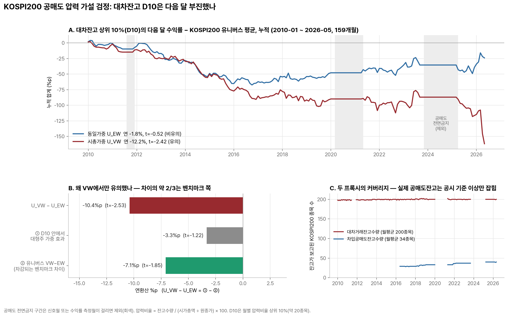

Asquith & Meulbroek(1995, 가설 A)는 공매도잔고가 높은 종목이 이후 유의하게 부진하다고 봤고, Asquith·Pathak·Ritter(2005, 가설 B)는 그 패턴이 동일가중(EW)에서만 나타나고 시총가중(VW)에서는 사라진다고 스스로 반박했습니다. 한국 KOSPI200에서 고압력 종목(D10)의 다음 달 언더퍼폼이 VW에서도 살아남는지 검정했습니다.
프록시: 주 프록시는 대차거래잔고수량. 헤지·차익·결제 목적 대차가 섞인 광의 지표지만 2010년부터 KOSPI200 거의 전 종목에 관측됩니다. 실제 공매도 포지션에 더 가까운 차입공매도잔고수량은 2016-06 이후에만 있고, 공시 임계값 때문에 월평균 34종목만 보고되어 보조 프록시로 두었습니다.
분모: 결산 항목의 상장주식수는 대부분 비어 있어 시가총액(×10⁶) ÷ 원종가로 역산했습니다. 수정종가를 쓰면 액면분할 전후로 비율이 깨지므로 원종가를 쓰고, 역산 주식수가 전월 대비 3배 넘게 변하면 결측 처리했습니다.
금지기간: 2011-08~11, 2020-03~2021-04, 2023-11~2025-03은 신호월이나 수익률 측정월이 걸리면 제외했습니다. 금지 구간은 약세장과 겹쳐 남겨 두면 "약세장엔 공매도에 정보가 없다"로 오독할 수 있기 때문입니다.
| 프록시 | 기간 | 개월 | EW 연환산 | t_EW | VW 연환산 | t_VW | 판정 |
|---|---|---|---|---|---|---|---|
| 대차거래잔고수량 (주) | 2010-01~2026-05 | 159 | -1.81% | -0.52 | -12.21% | -2.42 | A+ (VW 중심 유의) |
| 차입공매도잔고수량 (보조) | 2016-06~2026-05 | 87 | +12.67% | +2.82 | -5.22% | -1.16 | 신호 없음 |
VW 집중도 점검: 대차잔고 D10의 단일종목 최대 비중은 최대 42.57%로, 50%를 넘은 달은 없었습니다. 제출 결론은 "이 표본·프록시에서는 가설 A가 조건부로 더 타당하다"였습니다.

제출 판정은 판정표를 그대로 따랐지만, 포트폴리오로 정리하면서 "왜 VW에서만 유의한가"와 "그 결과가 특정 구간에 달려 있지 않은가"를 추가로 확인했습니다. 결론적으로 A+ 판정은 정보우위의 증거로 쓰기에 약합니다.
U_VW − U_EW = (D10 VW − D10 EW) − (유니버스 VW − 유니버스 EW)로 쪼갤 수 있습니다.
| 항목 | 연환산 | t |
|---|---|---|
| U_VW − U_EW | -10.40%p | -2.53 |
| ① D10 안에서 대형주에 비중을 더 준 효과 (D10 VW − EW) | -3.32%p | -1.22 |
| ② 유니버스 VW − EW (벤치마크 쪽, 빼는 항) | +7.08%p | +1.85 |
| 참고: D10 VW 절대수익 / KOSPI200 유니버스 VW 절대수익 | -0.02% / 12.20% |
차이의 약 2/3는 D10 종목이 아니라 벤치마크에서 나옵니다. 같은 기간 시총가중 KOSPI200이 동일가중보다 연 7.1%p 더 올랐는데, D10은 평균적으로 유니버스 시가총액의 6.8%만 차지해 초대형주 랠리를 거의 담지 못합니다. 따라서 VW 언더퍼폼의 상당 부분은 "대차잔고가 많은 종목이 정보에 의해 부진했다"기보다 "초대형주가 D10 밖에 있었다"는 크기 구성 효과일 수 있습니다.
| 구간 | 개월 | EW 연환산 (t) | VW 연환산 (t) | 판정표 결과 |
|---|---|---|---|---|
| 전체 2010-01~2026-05 | 159 | -1.8% (-0.52) | -12.2% (-2.42) | A+ |
| 2026년 제외 | 154 | -3.1% (-0.92) | -9.1% (-2.20) | A+ |
| 마지막 금지 해제 이전 (~2025-03) | 145 | -2.9% (-0.91) | -7.2% (-1.71) | 신호 없음 |
| 2010~2015 | 67 | -11.7% (-3.02) | -13.6% (-3.34) | A |
| 2016~2020 | 49 | +4.2% (+0.84) | -3.4% (-0.51) | 신호 없음 |
| 2021~2026 | 43 | +6.7% (+0.69) | -20.1% (-1.26) | 신호 없음 |
강한 신호는 2010~2015년에 몰려 있고 EW·VW 모두 유의했습니다(가설 A 형태). 2016년 이후에는 어느 쪽도 유의하지 않습니다. 전체 기간의 VW 유의성은 공매도 재개 이후 14개월, 특히 반도체 초대형주가 급등한 2026-04 한 달(U_VW −38%p)에 크게 의존합니다. "기간 의존적이고 드물다"는 가설 B의 지적이 한국에서도 성립할 여지가 큽니다.
대차잔고 기준 고압력 종목의 다음 달 부진은 2010년대 초반에는 뚜렷했지만 이후에는 확인되지 않습니다. 전체 기간 VW 유의성은 벤치마크의 초대형주 쏠림과 최근 몇 달에 기대고 있어, 판정은 "조건부 A"가 아니라 "기간 의존적, 결론 유보"에 가깝습니다. 다음 단계는 (1) 벤치마크를 D10과 같은 크기 분위의 종목으로 맞춘 비교, (2) 차입공매도잔고의 공시 임계값 미만 종목을 0이 아닌 결측으로 처리한 민감도 분석입니다.
데이터: FnGuide DataGuide(수정주가·원종가·시가총액·KOSPI200 편입여부·대차거래잔고·차입공매도잔고). 원본은 저장소에 포함하지 않습니다. 코드: github 저장소 src/short_pressure_analysis.py, src/build_portfolio_charts.py.